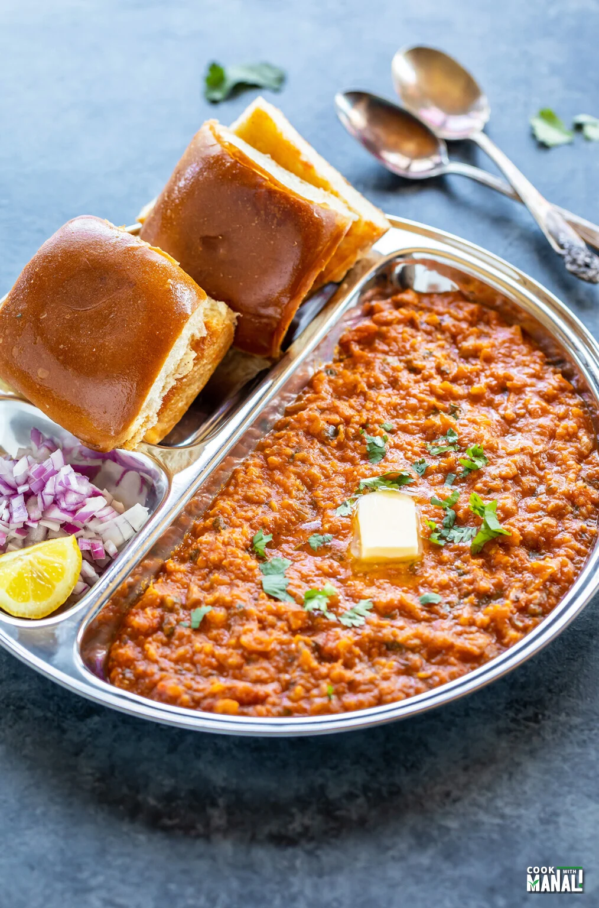
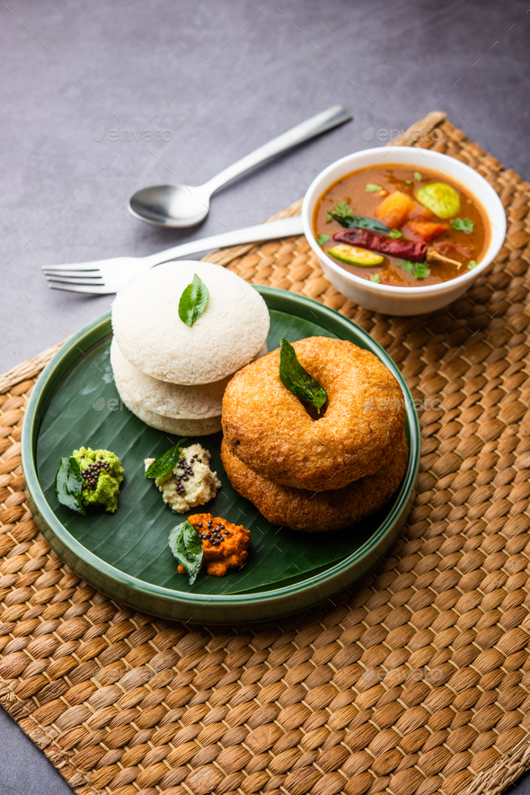
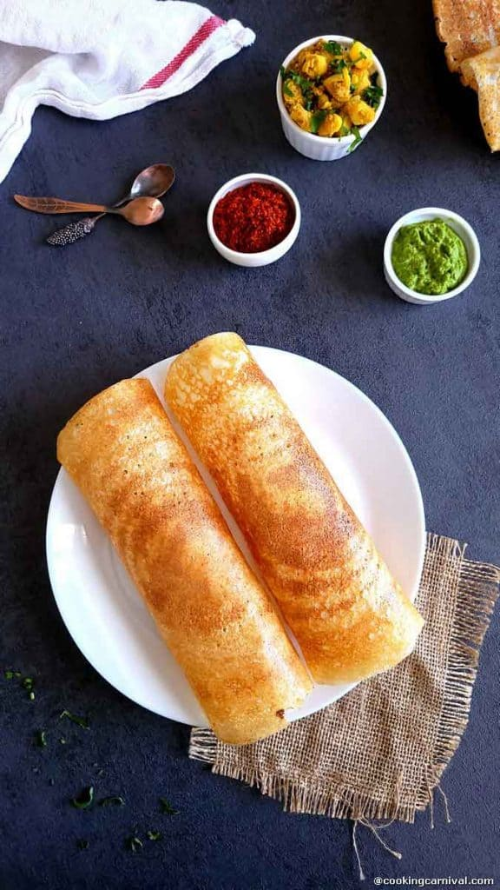

Pav Bhaji
pav bhaji! 🤤 A delightful Mumbai street food that’s like a flavor-packed party in your mouth. Let’s dive right into this iconic dish!
Ingredients
- Pav (Dinner Rolls)
- Mixed Vegetables
- Spices
Recipe
- Boil the veggies first.
- Simmer them with onion, tomato, and pav bhaji masala.
- Top with butter and coriander leaves.
- Serve alongside butter-toasted pav, chopped onions, and lemon wedges.

Idli Sambar
Ah, idli sambar—a classic South Indian breakfast combo that warms the heart and fills the tummy! 🌞🍽️
Ingredients
- ¾ cup toor dal (split pigeon peas)
- Mixed Vegetables
- Homemade sambar powder
- Spices
Recipe
- Cook the Dal.
- Make the Sambar Powde.
- Prepare the Vegetables.
- Assemble the Sambar.

Masala dosa
Masala dosa is a beloved South Indian dish that combines crispy rice and lentil crepes with a spiced potato filling
Ingredients
- ½ cup urad dal (skinned black gram)
- Mixed Vegetables
- 1 ½ cups raw Sona Masuri rice
- Spices
Recipe
- Prepare the Batter.
- Make the Potato Masala.
- Cook the Dosa.
